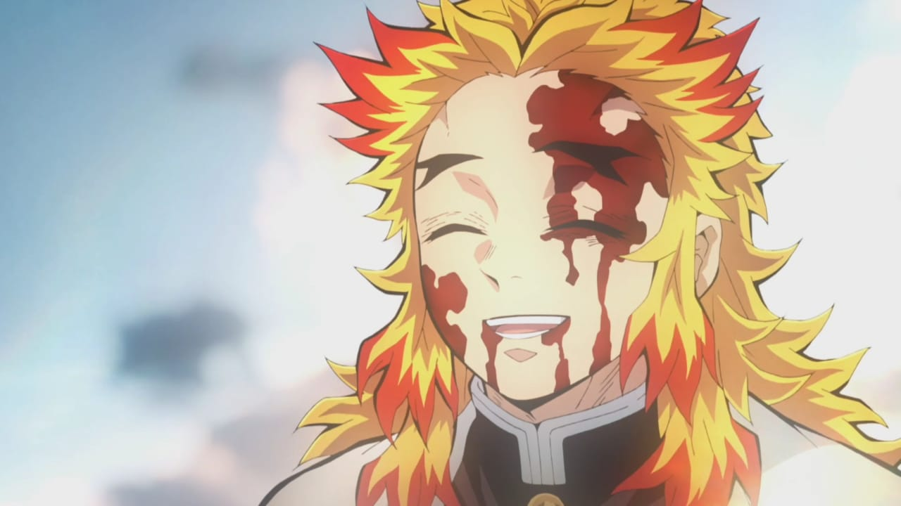

In the first episode he has lost his family and his sister becomes demon . he want to turn back his sister to normal human for than he need to kill and collect all the upper moon blood
Demon in the series is way too overpowered . there can heal themself and use spells . Musan is the head for all demon . he will give his blood to create demon . there are ranks for demons there are Upper moon,lowermoon,normal demons
The upper moon are way too powerful because their drinken more blood from musan . The top three upper moon are Kukoshibo who has ranked No.1 and Doma ranked No.2 and Akaza ranked No.3 .
There is a movie in Demon Slayer named the train to musan in that movie the upper moon 3 has killed rengoku
